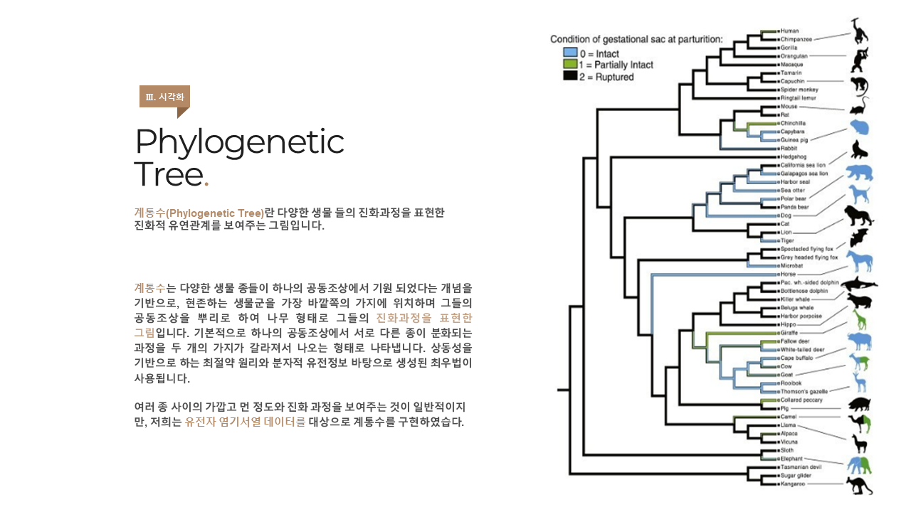
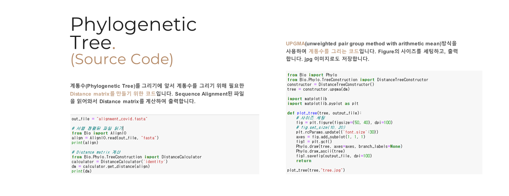
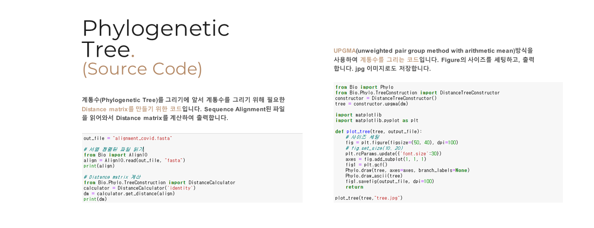
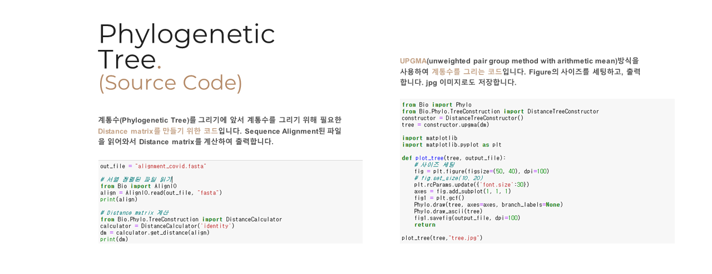
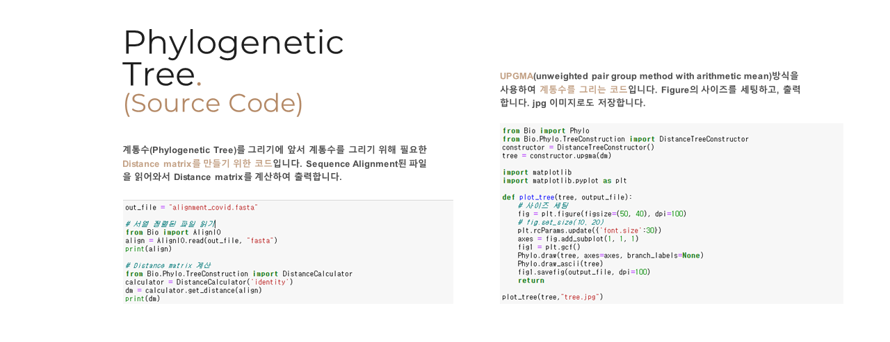
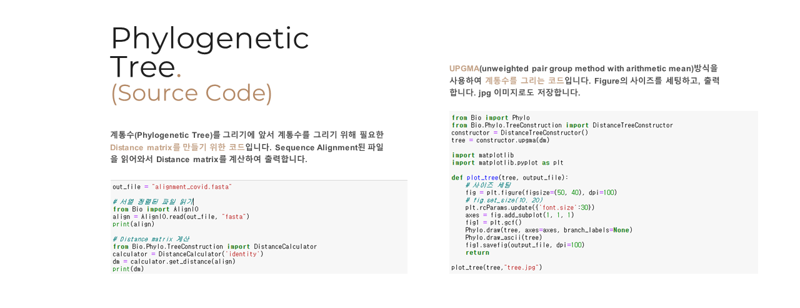
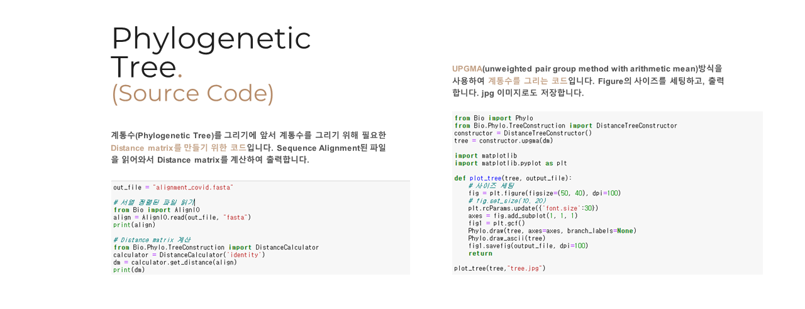
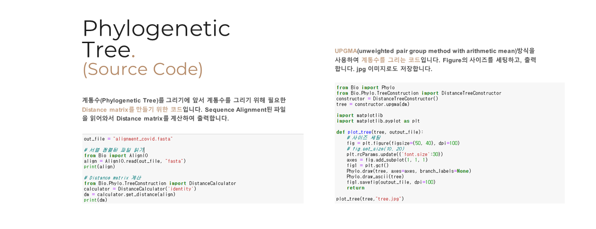

Home
일단 놔둠
프로젝트 개요
프로젝트 소개
알고리즘 설명
팀 구성원
COVID-19 염기서열 분석
우한 발 COVID-19
COVID-19 데이터 수집
Sequence Alignment
Visualization
결과 및 의의
COVID-19 vs 타 코로나 바이러스
CORONA VIRUS 종류 소개
Visualization
COVID-19 vs Animal
COVID-19 vs 낮은 치사율
COVID-19 vs MERS,SARS


 




